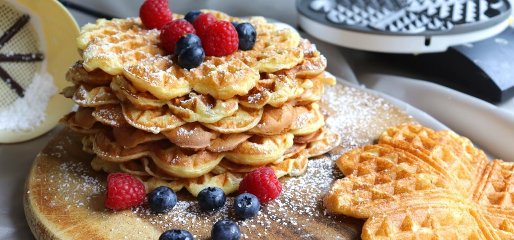

Waffeln

Beschreibung
Wie ihr herzhafte oder/ und süße Waffeln ganz einfach und schnell zubereitet, zeige ich euch in diesem einfachen und garantiert anfängerfreundlichem Rezept.
Das Rezept erfordert übliche Zutaten, welche in jedem Haushalt zu finden sind. Wage dich an das Rezept ran und verzaubere deine Liebsten mit deinen wölkchenleichten Waffeln.
Zutaten
- 3 Eier
- 125 gr Zucker
- 1 Pck Vanillinzucker
- 125 gr Margarine
- 1 TL Backpulver
- 250 gr Mehl
- 250 gr Milch
- 1 Prise Salz
- Puderzucker für die Verzierung
Zubereitung
- Eier, Zucker, Vanillinzucker und Milch in einer Schüssel vermischen.
- Mehl mit Backpulver und Salz separat miteinaner verrühren.
- Abwechselnd Margarine und Mehl zu der Eier-Zucker-Milch Mischung dazugeben, bis sich ein homogener Teig ergibt.
- In ein gefettetes Waffeleisen den Teig mit einer Schöpfkelle portionieren und goldgelb backen.
- Zum Schluss die abgekühlten Waffeln mit etwas Puderzucker bestäuben.
Back to home